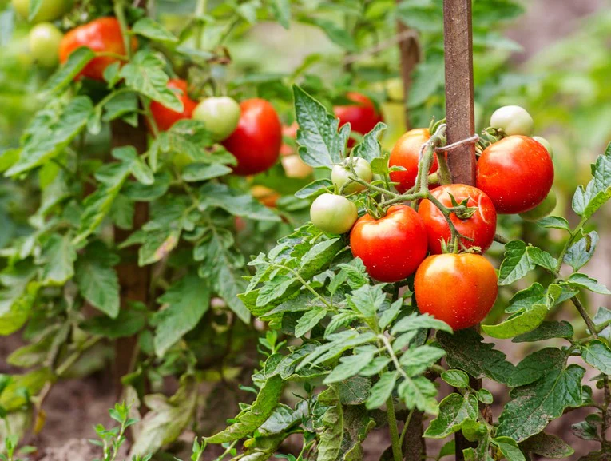
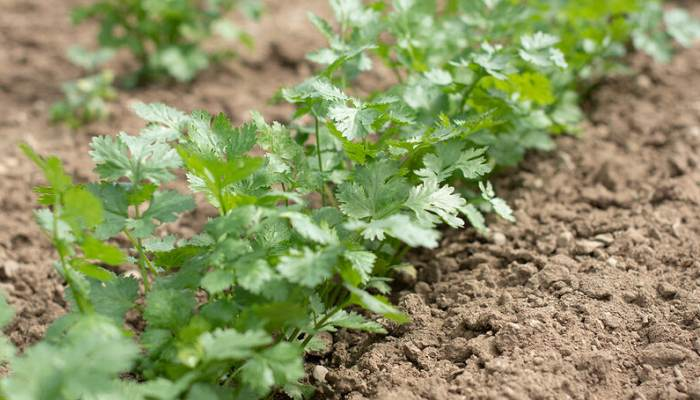
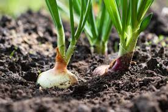

El tomate es una fruta de forma redonda u ovalada, de color rojo brillante cuando está maduro. Tiene una piel delgada y suave, y su pulpa está llena de jugo y semillas. Es un ingrediente versátil en la cocina, con un sabor jugoso y ligeramente ácido, aportando frescura a ensaladas, salsas y platos diversos.
El cilantro es una hierba aromática de hojas verdes y finas, con un aroma fresco y ligeramente cítrico. Sus hojas se utilizan tanto frescas como secas para sazonar una amplia variedad de platos, desde guisos hasta ensaladas y salsas. Su sabor es distintivo y puede ser polarizante para algunas personas, ya que algunos lo encuentran refrescante mientras que otros lo perciben como jabonoso.
La cebolla es una hortaliza de forma redonda u ovalada, con una piel seca y papelosa que varía en color desde blanco hasta morado. Su sabor es característico y puede ser picante o dulce, dependiendo del tipo de cebolla y de cómo se cocine. Se utiliza en una amplia gama de platos, tanto cruda como cocida, añadiendo sabor y profundidad a sopas, guisos, ensaladas y salsas. Además de su uso culinario, las cebollas también tienen propiedades medicinales y se utilizan en remedios caseros para tratar diversos problemas de salud.
